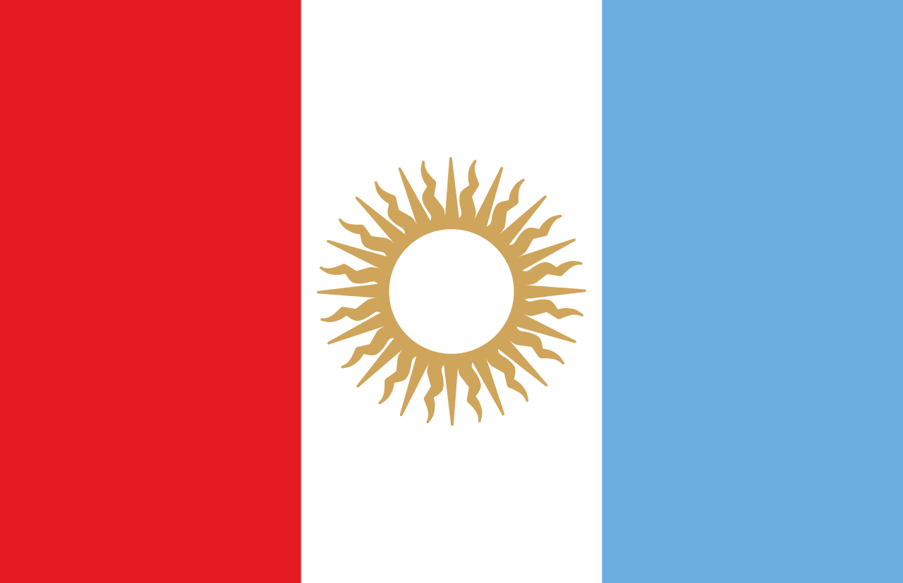
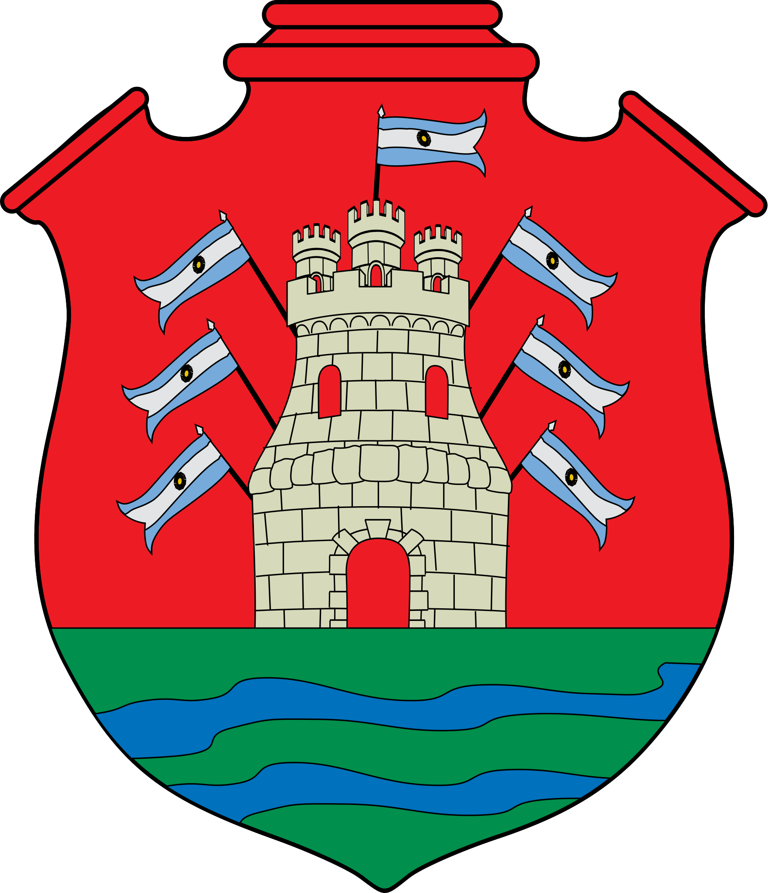

La provincia de Córdoba
Sobre Córdoba
Córdoba es una de las 23 provincias que componen la república Argentina. Se sitúa en la región central del país, a ambas orillas del río Suquía. Es la segunda ciudad más poblada de Argentina después de Buenos Aires y la más extensa del país. También se constituye en un importante centro cultural, económico, educativo, financiero y de entretenimiento de la región. También es conocida como "La Docta" o "La Ciudad de las Campanas".
Bandera y Escudo de Córdoba
- 
- 